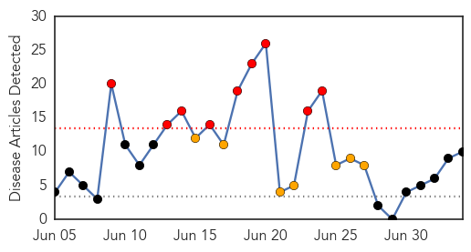
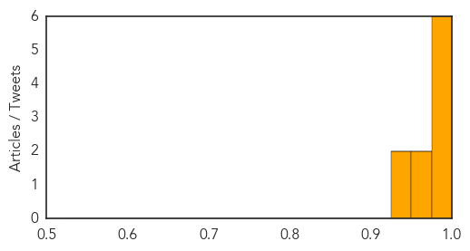

Meningitis
30-Day Web Trend
3 alerts, 0 warnings
30-Day Twitter Trend
0 alerts, 0 warnings

Article Locations

Article Confidences

Top Articles:
-
No articles found for Jul 04, 2014
Top Tweets:
-
No tweets found for Jul 04, 2014
Chikungunya
30-Day Web Trend
9 alerts, 7 warnings

30-Day Twitter Trend
1 alerts, 0 warnings

Article Locations

Article Confidences
Top Articles:
- 0.999
- 4 chikungunya cases reported in Boston among travelers to Caribbean
- 0.998
- Caribbean mosquito-borne virus making its way to U.S.
- 0.997
- Chikungunya Mosquito Virus Getting More Attention in the U.S.
- 0.996
- Chikungunya Virus Recorded in Boston After Travelers Return From the Caribbean
- 0.996
- Caribbean Ravaged Due to Rampancy of Virus
- 0.992
- Heavy rainy season in Latin America and the Caribbean could cause significant outbreaks - Dominican Republic
- 0.963
- Chikungunya virus warning for T&T
- 0.950
- State issues health alert on emerging mosquito virus
- 0.933
- This Breed of Mosquito Is Invading the U.S. — And It Could Carry a Terrifying Disease
- 0.926
- Health Check Special Report: Chikungunya
Top Tweets:
-
No tweets found for Jul 04, 2014